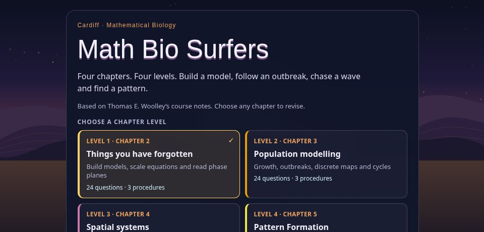

Math Bio Surfers
Math Bio Surfers turns my mathematical biology course notes into a four-level revision game. Choose a chapter, answer questions, arrange modelling steps and tackle common misconceptions. Runner mode adds a challenge across three lanes, while Study mode offers untimed practice with explanations.
Open the game